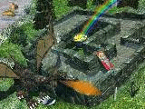
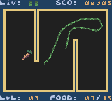
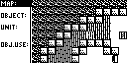

| 12/26/1999 |
|---|
No news for quite some time, really. We've been working further on the HiColour library, and a few other little projects. Just updated the page to wish all our visitors a merry Christmas (a bit too late...), a happy new year. We hope you enjoy your holidays! |
| 11/22/1999 |
|---|
During the last weeks, I (Andreas) got quite a few mails asking on how to run Plainjump on the ION shell for the TI-83+. Please note that I had not any part in writing the port of Plainjump from the original TI-85 version to any other platform, so generally, I can't give you information on how to run it there. Thus, contact the appropriate porter. |
| 10/26/1999 |
|---|
First update after quite some time brings a big surprise: get Maze3D including much requested sourcecode! |
| 09/15/1999 |
|---|
Released ZAC 0.9, a on-calc assembler compiler for the TI 86. |
| 08/29/1999 |
|---|
As of tomorrow monday, 08/30/1999, Andreas has to do his military service. This means that he will only be at home at weekends for the next 8 months. Thus, replies to e-mails may be delayed. |
| 08/27/1999 |
|---|
Updated TI-83 games Boulderdash, Squarez and Picross. Thanks Sam! |
| 08/25/1999 |
|---|
Check out pocket.ign.com and read a interview with us about the hi colour demo and other activities! New support address: support@icarus.ticalc.org. Feel free to mail us with your questions, suggestions, etc.! |
| 08/17/1999 |
|---|
Q&A from 08/13/1999 on pocket.ign.com contain a rather funny, Icarus-related question. Check it out! |
| 08/15/1999 |
|---|
Updated webpage logo Willy Wonderworm available again (was temporary unavailable) Watch out for a Sqrxz review and a interview with us on pocket.ign.com! |
| 08/04/1999 |
|---|
Check out the new version of our high colour image viewer for the Game Boy Color. Besides having added fading between images, further ones have been added, all adjusted in contrast and there is a musical soundtrack now for you to listen to while admiring the pictures. |
| 08/03/1999 |
|---|
Scabby achieved something thought to be impossible: more than 2000 colors in a picture. Check out the Game boy section! The demo includes four very colorful pictures. Only works on the real thing, though. Clem has release version 1.0 of his Text Viewer. Get it in the TI86 section. The new version has some bugs fixed, and also supports text file descriptions now. If no bugs are found, this can be considered the final version. |
| 08/02/1999 |
|---|
Jimmy has been able to get 2560 colors on the GBC screen at once. This more than 45 times the standard colors available (56). We're investigating the possibility to use this method for nicely colored pictures. Meanwhile, you can get the demo here. Find an interview with me in August's ticalc.org's newletter. |
| 07/30/1999 |
|---|
Jimmy has updated his personal homepage after more than a year! It's mostly general updates, but expect more updates soon. He has his TI 85 again now, meaning that there might be soon a final version of Usgard (include source code). Maybe it's time to update my (Andreas) homepage, too :) Anyways, today was my last day at my summer job, and there should be some more news the next days. There have been a few general updates to the site, so that the siteowner.com results turns out a bit better. We improved from three to four simleys, but there's still stuff left. To increase popularity, we might soon add a link section. Anyone interested in trading links can mail me. |
| 07/26/1999 |
|---|
Please check out New Skin, a new, informative online magazine for TI-calculators, containing a few interviews with Jimmy and me. It also contains some other interesting reviews, articles and other tidbits! Definitely worth to check out! |
| 07/23/1999 |
|---|
Changed the way newsitems look back again. The other layout wasn't too useful, really. Maybe it's time for complete overhaul, but as we currently focus on Gameboy Color programming, this won't happen too soon. For those interested or lucky enough to live at the East Coast: Roger Waters, bassist and co-founder of Pink Floyd tours for the first time for twelve years. He was the main force behind albums like Dark Side of the Moon or The Wall. Get more info here. Some tickets for the August leg are still available. |
| 07/22/1999 |
|---|
Scabby has finished his personal homepage, you can visit it here. Updated the About us page with the new homepage address. Modified the news item look a bit, so it now contains the main subject of the idea. I'm not too content with it, might change it again. |
| 07/16/1999 |
|---|
Markus Ess has taken part in Metacreation's RayDream 3D contest with his picture "Pot of gold". He's currently also setting up a new page with various raytracing stuff. We wish him good luck for the contest! Some minor site updates have been done, like fixing the "keyword" tag for better search results or a slightly modified contents bar. |
| 07/13/1999 |
|---|
Icarus Productions has a new member! Clement Vasseur, formerly with ACZ, has been acclaimed for his work for Texas Instrument's TI-86 calculators, especially "Maze3D". However, his interest shifted to commercial GBC (TM) programming in the last months, and will thus support us with our GBC and various other projects.
Clem's programs for the Texas Instruments calculators will be uploaded here soon. |
| 07/12/1999 |
|---|
Get a fix for Usgard's SRCWIZ.EXE here. It not only works with faster computers, but should also work with NT without causing the aforementioned "move troubles". |
| 07/10/1999 |
|---|
Sam Heald reported that Usgard's C.BAT file wouldn't work in Windows NT. This is due to the fact that the "move" command doesn't overwrite existing data (for security reasons, I suppose). To circumpass this, simply replace each "move" with an "copy" followed by a "del". You could of course also download the fixed C.BAT file here. |
| 07/08/1999 |
|---|
Grab the finished version of Willy Wonderworm in the GB section. This version also includes standard Gameboy support and some other bugfixes and additions. |
| 07/07/1999 |
|---|
Happy birthday, Philipp! Most of you won't know him, as he's a rather passive member of Icarus. He's responsible for several PC conversion programs and tools used by us internally. Hopefully he'll soon start on a PC game in OpenGL. |
| 07/05/1999 |
|---|
The newest version of Willy Wonderworm, to be found in the Gameboy section, contains a few new graphics by Johannes as well as working sound effects. For some reason though, it doesn't work on the real thing yet. Stay tuned. |
| 07/03/1999 |
|---|
We have a new parttime member to support us with our GBC projects. John Escobedo will provide us with additional graphics for one upcoming GBC project. We hope to be able to post some screenshots here soon. |
| 07/02/1999 |
|---|
Check out Scabby's new game for the Gameboy Color, Willy Wonderworm! It's a small game, but rather addictive! Features include color graphics, hi score saving, music and sound effects. |
| 07/01/1999 |
|---|
Mikolaj Franaszczuk has made some changes and additions to his Hyperion compiler. The newest version can be downloaded in our tools section. Mikolaj is also working on version 2.0, which will have a full visual editor, in which one will be able to load, edit, and save programs. It will also have a built in help system. |
| 06/30/1999 |
|---|
In order to get used to GBC coding, Scabby is currently converting Peaworm for the TI-86 to the Gameboy. "Willy Wonderworm", as the new version is called, will feature various levels with obstacles, nice palette effects and some music. We expect it to be finished by the end of this week. |
| 06/29/1999 |
|---|
Well, again no update for a long time. I hope to improve that in the next weeks. Anyways, I decided to release a few source codes like M.C.Mik, Balloon, XC-1701 II and finally also Usgard. The start is done by the M.C.Mik source code. Download the source for episode one and do whatever you want with it :). |
| 06/20/1999 |
|---|
Ah, finally back again! This is Andreas, having returned from his vacation from Rhodes.
As you all may have noticed, there haven't been to many updates lately. As Jimmy says, we were pretty lazy during the last few weeks, but we also had quite some stress due to our exams. This should be over now...
In case you wondered what we're up to the next time, I can only say: there's only one TI - specific plan by me, namely a more generic text viewer for all TI graphing calculators, with a text format that also works for HP calculators and is partly menu driven. It's a project together with a friend of mine, but I can't guarantee anything yet... Other than that, we're currently focusing more on (commercial) CGB projects, where I have no clear information on yet. |
| 06/14/1999 |
|---|
No, we're not dead... we're just very lazy. Almost a month since last update, and not much has happened really. Things should get better next week when Andreas Ess comes back from his vacation in Rhodos, and resumes the maintenance of this page.   Johannes Rajala has been working on his TI-85 project LaserSquad, and here's an animated screenshot (taken with the Virtual TI Emulator by Rusty Wagner) from the mapengine. Are you wondering what happened to the ZCP? Well, so do I... I don't know when the next round will appear - you'll just have to check this page every now and then... |
| 05/17/1999 |
|---|
Very little has happened during the last week. Both Andreas and I, Jimmy, are busy with studies, so don't expect many updates in the 2-3 weeks to come. Because of this, the ZPC round 4 will be delayed a week, until Sunday 23 May. The source codes to ZPC round 3 has been uploaded. Check them out here! |
| 05/09/1999 |
|---|
ZPC round 3 is over! The winner is Jeff Hellrung with his 350 byte routine. Disappointingly, only two people entered the competition this round. Too hard problems, maybe? We'll see - the next round (starting May 16th) will contain several, easier problems (like round 1). |
| 05/08/1999 |
|---|
Jeff Hellrung enters the current ZPC round with an astonishing 350 byte solution! |
| 05/06/1999 |
|---|
FINALLY, after almost a year, a new version of your favourite homebrewn Nintendo Gameboy game, SQRXZ, is released! You'll find it, of course, in the Nintendo Gameboy section. Jonah Cohen is the first one to submit a working solution to ZPC round 3.
|
| 04/30/1999 |
|---|
The problem statements for ZPC round 3 is finally online. The problem should be easier than the last round, but harder than the first. Deadline is May 9th 6.00 pm (CET). |
| 04/27/1999 |
|---|
The specifications of the next ZPC round won't appear until friday because I have a pretty tough final on thursday evening. However, it will be about spelling out numbers. The beginning of this page describes the problem pretty good, and there's even an algorithm (in Java) presented. |
| 04/25/1999 |
|---|
The ZPC solutions to round 2 is finally online. The problems for round 3 will appear shortly. |
| 04/18/1999 |
|---|
ZPC round 2 is over, after a thrilling last day, where the top three all submitted a better solution. The winner is the team Clem Vasseur and Gregory Apou (score 137), followed by Jeff Hellrung (139) and Ian Collier (143). All of them have done a tremendous work! For the rest of you, please come back the next week, as round 3 of the ZPC will start - with more easy-to-solve problems... Sqrxz for the Gameboy Color system is approaching its release! Be sure to check out some hot screenshots from this game... |
| 04/16/1999 |
|---|
A new no. 1 in the ZPC! Jeff Hellrung, Macross Software has found a 140 byte solution!!! See the results here. |
| 04/13/1999 |
|---|
Clem Vasseur has optimized his ZPC score. Can you beat the current top score of 164 bytes? |
| 04/12/1999 |
|---|
Finally, two submissions to ZPC, look at them here. Can you beat the current top score of 171 bytes? Mikolaj Fransczuk sent in the correct solution to yesterday's problem: both a and b are 5, resulting in a sum of a+b = 10. In case you wondered why this was the last math problem for a while: I'm not only running out of problems, but I don't have enough time due to my finals, either. Therefore, Jimmy will lead you through the next few weeks! If there is enough interest, I might continue with the problems later on. |
| 04/11/1999 |
|---|
Another update to the ZPC problem stating: you do not have to worry about empty strings (that is, just a 0) because that special case is probably handled before calling the evaluation routine (if you were to implement the routine in a real program). Nobody solved yesterday's problem. The solutions would have been -1/a, 2a. Last task for a while:Given that 1 * 3 * 5 * 7 * 9 = 10!/(a!*2 b). Find a + b! |
| 04/10/1999 |
|---|
Seem like we'll be getting two ZPC submissions soon! Here's some clarifications which have been added to the problem page: () is not a valid expression. You do not have to worry about precedense order of errors. That is, no test data will have both division by zero and an invalid expression. Verena Schmid solved yesterday's task: 2*a*b/sqrt(b 2+a 2)) What are the roots of the equation x 2 - (2a-1/a)x - 2 = 0? |
| 04/09/1999 |
|---|
Chances are that a new version Sqrxz GB will be released soon. Jimmy continued working on it again. There's still quite some stuff to do (also from my side), but keep checking this site, maybe it's ready the next week!
JayEll solved yesterday's problem: the height of the tower is 61.5m. Given an ellipsis with x2/a2+y2/b2 = 1. What's the length of the side of the best fitting quadrat (sides are parallel to the axis)? |
| 04/08/1999 |
|---|
Finally, there could be a new game in the next time from Icarus Productions. Johannes is coding a war strategy game for the TI-85. Stay tuned for more news.
Nobody solved yesterday's problem (maybe it was too easy?). Anyways, here's another one: Someone sees the peak of a tower (standing in a horizontal plane) in a distance of 45m in a angle which is double as big as the angle in the distance of 120m. Calculate the height of the tower, given that the persons' eyes are 1.5m above the ground. |
| 04/07/1999 |
|---|
Kinda reversed the date of the past few news. Fixed that now. Still no entry, but a few people have started with their solution for the ZPC problem.
Tim Adkisson solved yesterday's math problem: the answer is 38.
Another complex equation 2z2 - (1,sqrt(3))*z - (1,-sqrt(3)) = 0. |
| 04/06/1999 |
|---|
Already started working on your solutions for the ZPC problem? We hope so! Yesterday's problem was indeed a bit weird, as there seems to be nearly an infinite amount of solutions, according to Bibi. Oh well, try that one: Find the sum of all positive integers n for which n 2 - 19n + 99 is a perfect square. |
| 04/05/1999 |
|---|
Finally, a new ZPC problem is available. It is maybe the hardest problem ever to be posed, as it requires quite some work and time to solve! Therefore, the competition will last 2 weeks this time! Also check out the sources to the previous problems which have been archived now. Added Mikolaj's webpage address to the tools section. Nobody managed once again to solve yesterday's problem. And the new one is maybe a bit odd, too: how many n are there so there is an integer solution for x: (4+x) n = 7. Bibi just made that up, so... |
| 04/04/1999 |
|---|
Happy Easter to you all! I hope you all have a nice weekend!
Unfortunately, there is no new ZPC problem today, because Jimmy wants to solve the problem himself first and he has to get a completely crashed computer working before that. Expect the new problem tomorrow! Sorry for any inconveniences!
Unfortunately, I made some mistake yesterday when giving the equation (5(1+i)) would be correct. Verena Schmid asked for the correct equation and solved the task correctly: p = -4-i, z2 = 3-i.
Today's problem comes from Bibi: the first derivate of (ln(sqrt((3x²+1)/(x-5)))) = ? |
| 04/03/1999 |
|---|
It seems that finally, Usgard could also reach the programmers who use Macintosh. Inostock asked me for the source of string85 to convert. When this is done, there shouldn't be any further obstacles.
Keith Batten sent in the answers for the two last preceding problems: p = 2.5 and the last digit is 1!
Given the complex equation z2 + pz +(5+i) = 0, with the two solutions z1 and z2. z1 = 1 + 2i. Calculate both p and z2! |
| 04/02/1999 |
|---|
Generated a new page: the tools section contains various programs (written both by Icarus Production members as well as other contributors) which can be of great help when coding. Mikolaj Franaszczuk's Hyperion is the first program to be found in this section. The Hyperion compiler was created to provide a simpler way for programming in TI-85 assembly. It is based on a cross between the PCs C and BASIC languages, providing ease of use and powerful features at the same time. Nobody seems to have understood the problem posed yesterday. Hm... Anyways, today's problem is pretty easy: what's the last digit of the sequence 1999 19981997...n? |
| 04/01/1999 |
|---|
Mikolaj Franaszczuk, author of "ZBasic", a BASIC-to-Z80 compiler, has been working on a new, improved editor for coding Z80 programs. According to his descriptions, Hyperion is a fantastic editor with loads of useful functions and good documentation. Stay tuned here for news about this great program!
Bill Kinnersley sent in the correct answer to yesterday's problem: k < 0.5.
Given is the circle x2 + y2 = 100 and the curve y2 = 2px. They have a common chord, resulting in a curve-segment. For which value of p is the area of this segment maximal? |
| 03/31/1999 |
|---|
Unfortunately, I have been unable to verify any of the sent in answers, but I suppose that JayEll's solution, 4.449 is the correct one?
If x2+y2-x+y+k = 0 represents a circle, then what is the range of values of k? |
| 03/30/1999 |
|---|
Updated ZTetris in the TI-83 section. This version fixes a bug with the new Z180 TI-83s. Eugene Fridman was the first to send me an e-mail with the solution 1 (e * (1/e)) for yesterday's problem! Here's one I didn't manage to solve: Four equally sized spheres with radius 2 are set together to a "sphere pyramid". This "sphere pyramid" is inside another, bigger sphere. What's its radius? |
| 03/29/1999 |
|---|
Sam Heald released both Plainjump 82 and Plainjump 83, v1.4. Get it in the respective section!
Verena Schmid sent in the right solutions to the math problem posed yesterday: a = -1.25, b = 2.5, c = 4.75.
What's the product of all real roots of the equation xln x = e? |
| 03/28/1999 |
|---|
The ZPC contest is over! Dux Gregis and Tim Adkisson won the contest as a team, scoring 68 bytes! Check the scores! Summary and comment will follow in 48 hours! Updated optimization page, thanks to Kirk Meyer. The latter also entered ZPC yesterday. If you can manage to optimize your routines yet, then send them in as quickly as possible! Jimmy found the solution to yesterday's problem: a = 2n(n+1) for every non-negative integer n (0, 4, 12, 24, ...). Given is the function y = ln(ax 2 + bx + c). In the point P(1;ln 6), the tangent of the graph is horizontal. Furthermore, the x-interception is at x = -1. Calculate a, b and c! |
| 03/27/1999 |
|---|
ZPC standings list has been updated once more. Finally, Aaron Curtis reached the famous 69 bytes! You still have time until tomorrow to send in your programs!
Tim Adkisson sent in the possible solutions to yesterday's problem, the most probable being 32 (daughter) and 62 (father).
Given that N is the set of all positive integers, then find all numbers a out of N, in order that the equation: x2 = 1+2a is solvable in N (i.e. the solution is contained in N). |
| 03/26/1999 |
|---|
Finally, army time is over for Jimmy! Congratulations! He spent the whole evening yesterday doing some ZPC test program. You can check the newest stats here. Note that there are two submissions where not all programs did work with the test program. A score of 69 is achievable! Eugene Fridman was the first to send in the correct solution for yesterday's problem: 29 (the list is 5,11,17,23,29). On a side note, I got this question from Bill Kinnersley, and just found that I'm not allowed to use them on the site. I will therefore get back to my own problems, as well as some of Keith Batten ones. So: 17 years ago, the father was three times older than his daughter. How old are they today, if the digits of the age of the daughter have been reversed in 9 years? |
| 03/25/1999 |
|---|
I guess Chris Romagni was the first one ever to release levels for my game Balloon. Get them here. The solution to yesterday's problem, 366001, was found by Tim Adkisson. This one's a bit difficult: Find the smallest prime that is the fifth term of an increasing arithmetic sequence, all four preceding terms also being prim. |
| 03/24/1999 |
|---|
Jimmy will unfortunately not be able to verify the new ZPC entries before thursday evening. According to him, it's pretty even now, between 77 - 82 bytes. Therefore, a close examination is necessary.
Dan Englender sent in the first correct solution to the problem posed yesterday: 34 digits.
What's the sum of the first 1999 positive odd integers? |
| 03/23/1999 |
|---|
Updated the ZPC pages, as well as the Z80 FAQ, and the Z80 optimization guide. Keith Batten was the first to submit the answers to yesterday's problem: x intercept is 1, and the domain of the function is -2 < x < 2. Keith Batten and Bill Kinnersley also sent me some further math problems, the first of which you can enjoy today: How many digits does the number 25 16 * 2 38 have? Send results to ess.andreas@cable.vol.at. |
| 03/22/1999 |
|---|
If you came here looking for the ZPC, follow this link please. Steve Russo was the first one to send in the two correct solutions for yesterday's math problem: x=1 and x=16. Today we've got another equation: Find the X-intercepts as well as the set of numbers for which this function is defined. Solutions to ess.andreas@cable.vol.at. |
| 03/21/1999 |
|---|
Announcing our first feature: the Z80 programming competition! Click the link for more information, if you dare! ;-) The math contest will later on be added to the feature section, too. But for now... JayEll was once again the first one to send in the correct answer: 0.8115 is the radius. Yet another simple task: solve the following equation. |
| 03/20/1999 |
|---|
Oops! Little bug in the last answer: the correct answer was -c/b. The solution for yesterday's problem was found by Verena Schmid: the 100th digit is 9. This can be found by adding together 3 (number of one-digit squares), 12 (twice the number of two-digit squares) and 66 (three times the number of three-digit squares). Then, 19 digits are left. The 100th digit is the 3rd digit of 362.
Another simple one: the corners of a rectangle (3,4) are rounded off (creditcard like) so that the new circumference is 10% smaller than the old one. Find the radius of the arcs in the corners! |
| 03/19/1999 |
|---|
Scabby has got one month of vacation from now on. He hopes to be very productive and release another version of Bomberbloke among other.
Wolfgang Stadler found the solution to the last math problem: the limit of x2 is 0.
Today's problem is pretty simple: given you put all quadratic numbers together in the form: 1491625364964 ... What's the 100th digit?
On a side note, Microsoft released their Internet Explorer 5.0. If you have difficulties viewing these pages, you may want to get it! |
| 03/18/1999 |
|---|
No one solved yesterday's problem correctly :( (or maybe I did some error?) Anyways, the shortest rope can be easily calculated with two circle sectors plus some trigonometry. This results in: l = 44/30*pi+1.92*2 = 8.4477.
Given the quadratic equation: ax2 + bx + c = 0, with solutions x2 and x1, where x2 > x1. Calculate the limit of x2 as a tends to 0, i.e. lim x2 for a->0. |
| 03/17/1999 |
|---|
Uploaded Picross 82 v1.3 to the TI-82 page. The solution for yesterday's task was: a) 504 = 9 * 8 * 7, b) 279 720 = (56*45)*(100+10+1). JayEll was the first to send in the correct solution. Now what about this one: give are two circles with r1 = 1, and r2 = 0.2. The distance of their centres d = 1.6. A rope is tied around the two circles. Find the shortest possible length of the rope! |
| 03/16/1999 |
|---|
Thanks to Matthew Shepcar, Sam Heald got the Planejump level editor on the TI-82 working. The TI-83 version has been updated as well. Not only does Johannes draw the graphics for a game by Macross, but he also helps Clem of ACZ drawing. Seems that he's the only one of us actually doing something at the moment. The rest of us hopefully get some time again soon - a new version of Bomberbloke might be released this week. The last math task could be simply solved by splitting the quadrilateral into triangles and rectangles. The solution was 30. Bill Kinnersley was the first one to send in the correct answer! JayEll even sent it in with complete sketches how he did it, etc. :) Today's task consists of two subtasks: 1) How many three digit numbers are there such that none of the digits are zero
no digit is used more than once in each number?
2) Evaluate the sum of these numbers! |
| 03/15/1999 |
|---|
Added TI-82 and TI-83 section, containing mainly ports of our games done by other people. Yesterday's exercise seemed to pretty simple, as quite a few people sent in the correct solution: using Heron's formula, the area can be calculated as 10.3923 or 6*sqrt(3). Terence Wong was the first to send in the correct solution! JayEll asked me to make the tasks a bit more difficult, so I'll keep on making them harder. The following one's still pretty simple:  In a quadrilateral as seen in the image, the length of side AB = 10. Points C and D lie on a semicircle above AB. The distance from C to AB is 4, the distance from D to AB 3. Calculate the area of the quadrilateral. |
| 03/14/1999 |
|---|
Happy birthday Markus! Our level designer and rendering artist turned 15 today! Updated file header list once more. The correct solution to yesterday's mathematical problem was NOT 60 degrees, nor was it a digital clock! Due to the movement of the hour hand by 10 degrees, the correct solution is 70 degrees. JayEll of Macross sent in the correct answer. Before getting to a few more difficult tasks - what's the area of a triangle sides of length 3, 7 and 8? mail us the solution! |
| 03/13/1999 |
|---|
Bibi and Andreas have been to a math contest in germany today (no TIs allowed :( ). There were three competitions, group, speed and individual competition. In group and speed competition together, their group ranked third of a total of 29 groups. These next weeks, you'll be presented with some of the simpler tasks of this competition (i.e. the speed competition ones). Most of them can be solved without a calculator. What's the angle between the minute hand and the hour hand of a clock showing 18:20? E-mail us your solution! Updated the file header list and uploaded a working version of the SVI emulator to the PC section. |
| 03/12/1999 |
|---|
Find out how to deal with external variables using Usgard - Usgard FAQ. Besides tracking down some other minor errors in Bomberbloke, Scabby has changed the link routines back to the old ones. In his opinion, not the routines themselves are the source of the errors. He hopes to release a bug fixed version these next days. Sam Heald has proposed a solution for the earlier stated problem concerning the ports. The new change will be applied these next days. Made file header list available. Contact us if your program is missing. |
| 03/11/1999 |
|---|
Some people wondered where the port section has gone. We were planning to make ports downloadable directly from each program page, so you could select between the various versions of Sqrxz, for instance. However, now it seems that this isn't the best solution. If anyone has an idea, then contact us. For now, you can get an updated Picross for the TI-82 here and the source here. |
| 03/09/1999 |
|---|
Scabby turns 19 today. HAPPY BIRTHDAY! We hope that you'll continue to be a great friend and programmer in the future as you've been until now! |
| 03/07/1999 |
|---|
A new version of Bomberbloke is out! Besides improved link routines, v0.96 features new working boni like the Zapper, the Boots and various bug fixes. In addition to this, there are now even more levels (15) to beat. Definitely worth a download - go to the TI-86 section. |
| 03/06/1999 |
|---|
Released MC Mik, episode 2 for Usgard. This is the second and last episode which was originally done for ZShell. In the future, I might release the source code for for Episode 3. Get MC Mik in the TI-85 section. |
| 03/05/1999 |
|---|
The next program to be released is M.C.Mik Epsiode #2, be prepared to download it from here tomorrow.
We also intended to release Usgard 1.6, but Jimmy's recent discovery of a ROM version 1.0 lead to a delay. We still hope to release the new version with ROM 1.0 & 2.0 support and source code soon.
Scabby has meanwhile added a few things to Bomberbloke, but has to struggle with some bugs. Let's hope he'll fix them soon. |
| 03/03/1999 |
|---|
Finally, we moved to TICALC.ORG! Johannes and Andreas have re-designed and re-organized the entire page. Hopefully you like the new look!
Some sections aren't up yet, but this will change soon. We intend to update the page more frequently these next days.
At this point, we'd also like to thank Bryan, Magnus and the rest of the TICALC.ORG team for providing us with this webspace and help! |
| 02/14/1999 |
|---|
First off, Icarus Productions would wish all our visitors a happy Valentine's Day!
We're sorry that there's no updated program today, we originally intended to release Bomberbloke, but Scabby didn't get around finishing it. Anyways, be prepared for some surprises the next few days - Stay tuned! |
| 02/13/1999 |
|---|
Forgot to include the WinShell source itself in winlib.zip. Updated the ZIP in the Source section. |
| 02/12/1999 |
|---|
Another day, another update - I won't keep this daily update stuff too long anymore. At least, I won't do every update on the new page, there'll be special, regularly occuring features. Talking of the new page, Johannes has done some great graphics for it, and it seems to get into shape slowly. As soon as we've got one page completely ready, the rest is no problem anymore thanks to HTMLWiz... Could last a while though (hopefully not too long).
Scabby didn't have the time yet to work a lot on Bomberbloke, but he confirmed to me that the new version will also feature the zappers. Maybe he'll even get the Capture-the-Flag-mode in? Who knows! I for myself am anticipating the update!
I intend to release M.C.Mik Episode #2 these next days, followed by the (more than messy) source code to M.C.Mik. |
| 02/11/1999 |
|---|
Updated SpanIt! in the PC section and some other stuff on the homepage. The new version of Bomberbloke will feature improved link play and bug fixes. I (Andreas) talked to Clem concerning a RPG engine with editor for easy RPG development based on the Wrath of Zalthar engine. It also seems that CashOnly is interested to continue the project. So you should be presented with some RPG news soon... |
| 02/10/1999 |
|---|
A bugfix for Bomberbloke by Scabby is on its way. Icarus Productions is also proud to announce that we will start developing professional games for the popular PalmIII (3Com) in the near future... |
| 02/09/1999 |
|---|
*Yawn*... It's 3:37 AM and I'm off to the CERN laboratories in a few minutes. Before getting to know more about particle acceleration, here's the update for today: M.C.Mik Epsiode #1 with improved collision detection. Not sure whether it works for 100%, but check it out in the Z80 section. |
| 02/08/1999 |
|---|
Converted the Wrath of Zalthar source to Usgard (thanks to CashOnly) and added a few little things. There's also a level editor in the ZIP, which enables to do some 40x20 maps for WOZ. Still, enemies and stuff should be added first. Get the update in the Source section. |
| 02/07/1999 |
|---|
Finally we reached over 10000 visitors today! Well, this should be of course celebrated, shouldn't it? And would there be any better way than releasing a beta of Bomberbloke by Scabby? I'd say definitely no - this game simply rocks. Get it in the Z80 section! |
| 02/06/1999 |
|---|
Some time ago, there was no RPG available for the TI-85, and I decided to start with one. Unfortunately, as I'm not a very avid gamer, I didn't have too much experience with the topic and stopped working on Wrath of Zalthar for ZShell. Maybe someone is interested in the code, which is now available to the public in the Source section. It's still for ZShell, and not very optimized, I believe, but I might at least convert it to Usgard in future. See what you can make out of it. Okay, the number of visitors is now approaching 10000 :) And to celebrate this number, you should find here Bomberbloke tomorrow! |
| 02/05/1999 |
|---|
New versions of Picross for Ash and AShell 83 available in the Ports section. Added question to the Usgard FAQ. As you may have noticed, I've tried to update the page now every day. To quote Jimmy, doing this is a bit of an overkill, and I won't be able to do that much longer (aside from the fact that the items themselves aren't getting more interesting). I'll try to do that for the next few days, maybe even the next week, but then there might be a bigger pause. Until then, await Bomberbloke, maybe Sqrxz GB, the second episode of M.C.Mik and some other sourcecodes. |
| 02/04/1999 |
|---|
Erik Piel updated Squarez 82, eliminating the need for Squarez XL, updated the Ports section. Also uploaded Squarez 86 to the Z80 section. We will soon move to TICALC.ORGs server. I just signed a contract today, and the new design has to be elaborated by Johannes and me. Hope to get to icarus.ticalc.org next week. |
| 02/03/1999 |
|---|
Updated M.C.Mik in the Z80 section once again. Program is 200 bytes smaller, coins get erased when collected, and drawing is slightly faster. Also thanks to Nathan Haines for fixing up the documentation's grammar (hey, that was two years ago!). Anyways, I've been asked a few times on how to beat the first level. After getting the oxygen in the cave, go back to the main level, and there to right most screen. You can dive into the water there (note the coins indicating a down arrow!). If you're lucky, you'll soon face the boss of the level then. Updated link to Johannes' page in the About us section. |
| 02/02/1999 |
|---|
Uploaded a bugfix for String85. Earlier versions had problems with the H parameter, resulting in an invalid file. Thanks to CashOnly for reporting this bug. In addition, I also uploaded Squarez to the Z80 page - we completely forgot this one when setting up the page! |
| 02/01/1999 |
|---|
Some two and a half years ago, I released the first jump'n'run for ZShell. Even though it didn't include smooth scrolling, it had some nice features, like grayscale graphics, nine different enemies, bosses and more. Alas, M.C.Mik was only shareware. Until today. You can get now episode #1 of M.C.Mik for free. I converted it to Usgard, so it's smaller and maybe a little bit faster, too! More episodes and source code may follow. Get it on the Z80 page! |
| 01/31/1999 |
|---|
As the exams are over for Scabby, he intends to release a public beta of Bomberbloke to the public in the next week. What's more, Jimmy's currently working on Sqrxz GB. The new version will support all levels of the original game, new musical tunes, plus (hopefully!) colors! We've been also thinking about making a level design competition using the Sqrxz level editor, which is soon to be released. Finally, as I am converting a ZShell program to Usgard, I elaborated this table for ReplaceIt! which helps converting ZShell source code to Usgard one. Maybe you want to use it with the Planejump II source code I released yesterday? |
| 01/30/1999 |
|---|
It seems that the future Icarus Productions site will be located at TICALC.ORG's server. We hope to move there during the next two weeks. Expect also a new site design by then. As we won't have CGI support at first, the pages won't be generated by HTMLWiz anymore, resulting in the fact that we're again searchable! Uploaded the Planejump II source code to the source section. Someone feels like adding link play, or simply converting it to Usgard? |
| 01/29/1999 |
|---|
Ever wondered how to move a plus sign over the screen? Well, I for myself didn't until I received a mail to add this question to the Usgard FAQ... |
| 01/28/1999 |
|---|
As I don't have the time nor the desire to get WinLib working, I uploaded both the winlib and the winshell source to the source section. If you can fix it in any way, tell me :). |
| 01/27/1999 |
|---|
Downtime due to some problems with server (once again) and HTMLWiz. Anyways, we might soon move either to TICALC.ORG's server (icarus.ticalc.org) or Dimention-TI's server (icarus.calc.org). This would of course result in much faster loading times. |
| 01/22/1999 |
|---|
As faster PCs have problems with Pascal programs like SrcWiz, etc. which are needed to develop programs for Usgard, I decided to upload this patch, applicable to the EXE file directly. |
| 01/15/1999 |
|---|
Uploaded Squarez XL versions for the TI-82 (Ash) and the TI-83 (SOS) to the ports section. |
| 01/14/1999 |
|---|
Added Peaworm =:) for the 86 by Matthew Shepcar to the Z80 section. |
| 01/01/1999 |
|---|
Happy new year to you all! As you may have noticed, there haven't been any real updates these last weeks. Well, I hope that this will change in the new year. We've been very busy recently and still will be in the new year, but we intend to present you with a few new stuff in the new year. These will cover (in estimated order of appearance): - Sqrxz GB
- Generic Sqrxz level editor for Windows
- Bomberbloke
- Peaworm
- New FAQ
- New HP design
- Usgard 1.6
- Hopefully an own server & domain - contact us if you can help
Besides these, we also hope to be able to support you with sourcecodes, and similar stuff. A few days before the beginning of the new year, Ben Wise has joined Icarus Productions. He is very eager to learn and brings in a lot of ideas. See the About us section. |
|
|
|
![[Icarus Productions] - Click for main page](img/iplogo.gif)


{kind=link}